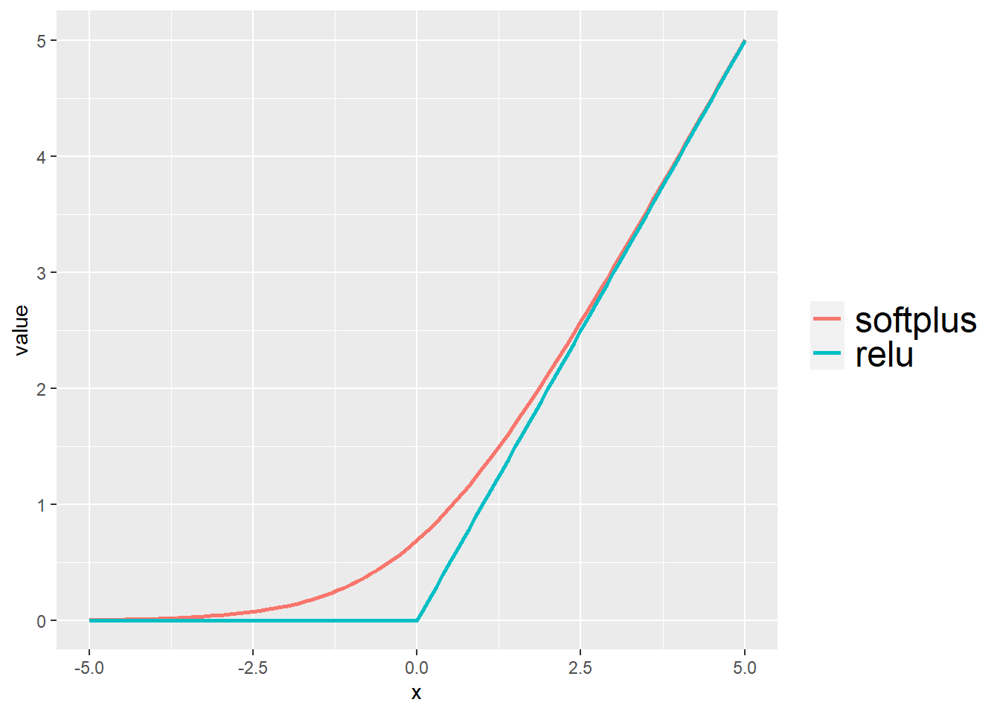
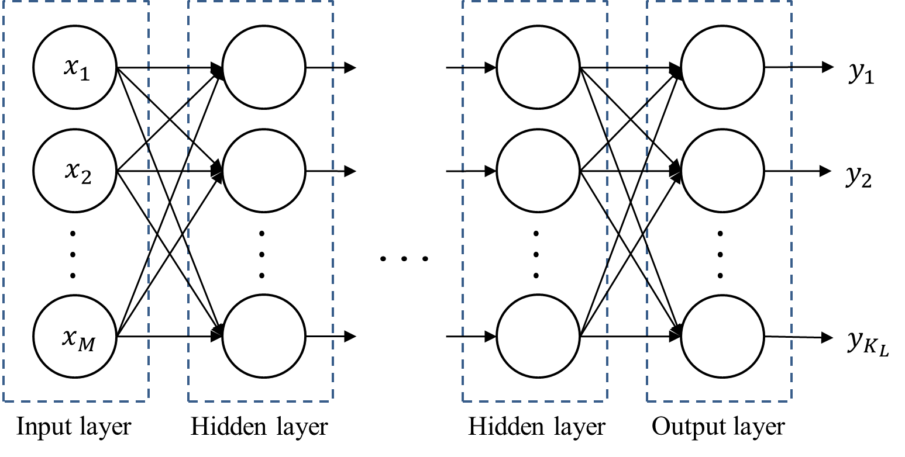
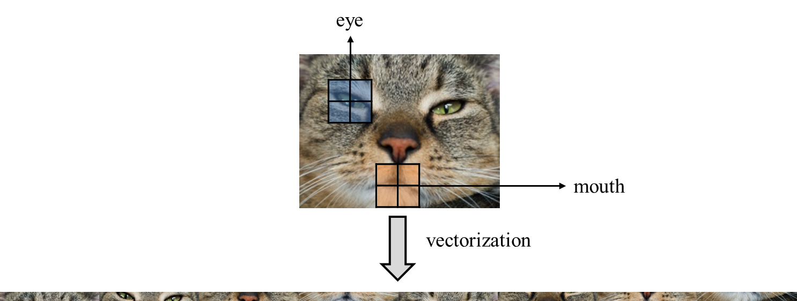
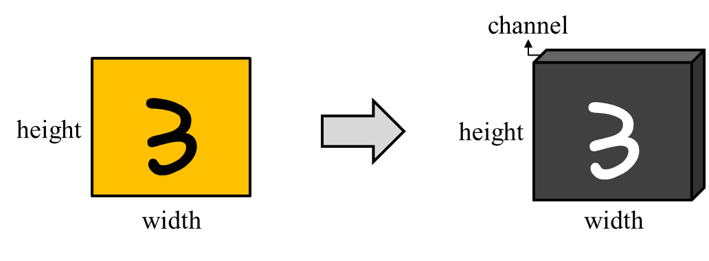
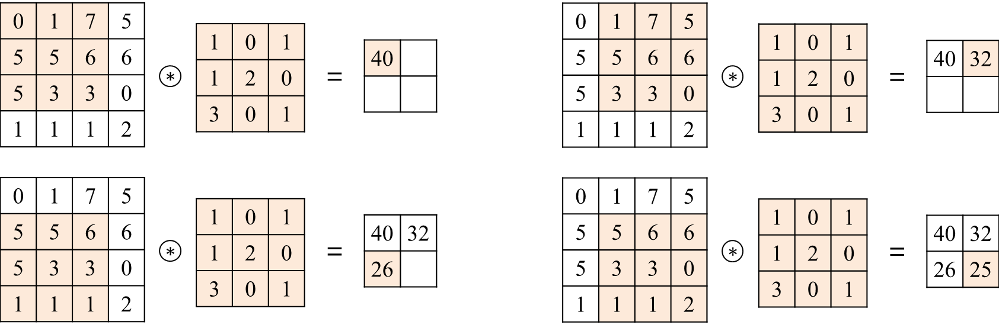
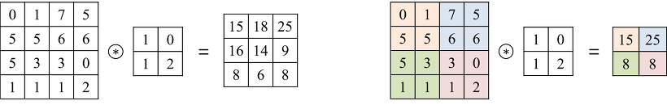
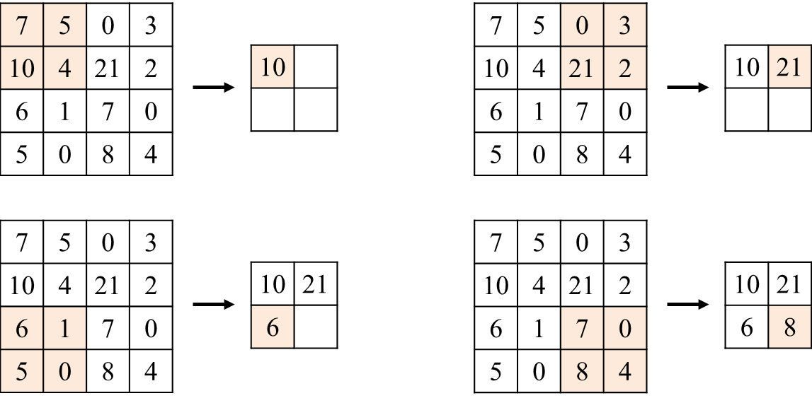

B About Cluster-GCN
’’’ - 1 ANN
1.1 Training
1.1.1 Backpropagation
1.2 Problem
2 CNN
2.1 Convolution Layer
2.2 Pooling
2.3 CNN 을 위한 back-propagation
3 Graph Convolution Network
4 Cluster-GCN
B.0.1 ANN
딥러닝이란 수많은 머신러닝 방법론들 중의 한 갈래로, 실제 신경계를 모사하여 인간이 현실세계에서 데이터에 대한 labeling 을 수행하는 방법을 구현하는 것으로 이러한 프로세스를 컴퓨터로 하여금 진행하도록 하는 것을 의미한다. 인간이 세상을 인식할 때 인간의 감각세포가 받아들인 외부의 자극 input (입력값)은 신경계를 거쳐 해석되어 어떤 종류의 인식인지 output (결과값)으로 분류되어 뇌에 인식된다. 이 일 련의 프로세스를 모사적으로 컴퓨터로 구현하여 인간의 인식을 전뇌적으로 구현하고자 하는 것이 딥러닝의 기초적인 정의이다. 이러한 딥 러닝의 가장 핵심적인 알고리즘으로 꼽히는 것이 Artificial Neural Network (ANN) 으로, ANN 의 방법론을 수학의 언어를 빌려 설명하자면 이하와 같다.
\[ \begin{aligned} \mathbf{x} &=\left[x_{1} x_{2} \ldots x_{M}\right]^{T} \\ s(\mathbf{x} ; \theta=\mathbf{w}, b) &=\mathbf{w} \mathbf{x}+b \quad=\sum_{j=1}^{M} w_{j} x_{j}+b \\ y &=\sigma\{s(\mathbf{x} ; \theta)\} \end{aligned} \]
\(\mathbf{x}\) : 외부의 자극 input
\(\mathbf{w}, b\) : 신경계의 작동 메커니즘. \(\theta\) 는 해당 구현에서의 패러미터인 \(\mathbf{w}, b\) 의 실현값.
\(y\) : 뇌가 인식하는 결과값 output
ANN 은 신경계의 분류 메커니즘이 linear transformation 이라는 가정을 깔고 시작한다. input 되는 외부의 자극을 linear 하게 조립하는 것 으로 인간이 해당 자극을 labeling 하기 직전에 마주하는 최종적인 자극의 형태를 만들어낼 수 있다는 것이 그 골자이다. 이때 자극 input 을 linear transformation 하므로, 자극 vector 를 linear transformation 할 coefficient 와 스칼라 연산을 할 constant 를 필요로 한다. 이때 coefficient 를 weight, w 로 명명하고, constant 를 bias, \(b\) 로 명명하게 된다.
언급하였듯이 labeling 하기 전 인간의 신경계가 linear 하게 조립한 자극 자체는 아무런 의미를 갖지 않는다. 이렇게 도출된 계산결과를 무 엇으로 인식할 건지에 대한 규칙을 1 번 더 거친 후에야 비로소 인간이 어떻게 해당 자극을 labeling 하였는가에 대한 결과값을 얻을 수 있 다. 이 규칙이 바로 \(\sigma\) 이며 이는 activation function 이라고 불린다. activation function 자체에는 unit step function, sigmoid function, cross entropy 등 다양한 종류가 존재하며 activation function 자체는 연구자가 임의로 선택하게 된다. sigmoid function 은 가장 자주 쓰였던 함수 중 하나이나 sigmoid 의 미분값은 \(0 \sim 0.25\) 사이이기에 전달되는 weight 가 발산하거나 곡선의 기울기가 0이 되는 Vanishing Gradient Problem 이 발생한다. 해당 문제를 해결하기 위해 최근에는 임의로 설계된 함수인 ReLU 함수를 activation function 으로 많이 채용한다. 이는 미분값이 0 혹은 1 로 연산자원을 적게 먹는다는 장점 때문에 자주 사용되는 함수이다.

기본적으로는 설명의 편의를 위해 sigmoid 함수를 사용하겠다.
이렇게 1 개의 인공적인 neuron 을 설계해냈지만 이것으로 문제가 한번에 해결될리는 없다. 연구자가 임의로 정한 weight 와 activation function 으로 문제가 한번에 풀린다면 이상적이겠으나 현실에서는 neuron 의 기능이 부족하여 문제를 한번에 해결하지 못하는 경우가 대다수이다. neuron 이 정확하게 작동하기 위해서는 이하의 2 가지 문제를 해결해야 한다.
Training: 주어진 training dataset \(\mathcal{X}\) 를 이용하여 인공적으로 설계한 neuron 이 계산해내는 자극의 linear transformation 이 실제 목표하는 neuron 의 작동기전과 일치하도록 패러미터의 weight \(\mathbf{w}\) 와 bias \(b\) 를 조정.
Classification: neuron 이 작동 도중 계산해내는 자극의 linear transformation 을 activation function \(\sigma\) 로 분류할 때 이것이 정답과 일*치할 수 있도록 \(\sigma\) 를 조정
이때 \(\sigma\) 는 연구자가 직접 설정하므로 이터레이션을 거치며 성능향상을 시키는 과정에서 자동화를 시키기에 어려운 부분이 존재한다. 따라 서 ANN 에서 주요한 것은 training 과정에서 neuron 의 패러미터 weight \(\mathbf{w}\) 와 bias \(b\) 가 정답에 가까워지는 속도를 올리는 것이다.
B.0.1.1 Training
neuron 의 training 을 위해서는 우선 cost function \(C\) 를 정의해야 한다. cost function \(C\) 의 목적은 input \(x\) 에 대한 정답인 \(t\) 와 현재 보유하고 있는 model 에서 계산해낸 output \(y\) 사이의 차이를 계산해내는 것이다. 보편적으로 쓰이는 cost function 중 하나는 Sum of Squared Error (SSE) 이다. neuron 의 training 이란 곧 \(C\) 의 값을 작게 만드는, 즉 실제값과 model 이 계산해낸 결과값 사이의 오차를 최소화시키는 \(\mathbf{w}, b\) 를 찾아나가는 과정과 같다. 이러한 학습에는 주로 gradient descent method 가 사용된다. gradient descent method 를 사용해서 neuron 을 training 하는 상황을 가정할 경우 \(C\) 를 \(\theta=\{\mathbf{w}, b\}\) 각각에 대해 편미분 한 결과값을 얻어야 한다. 편의를 위해 activation function 은 sigmoid 로 사용하였다고 가정하자. 이 경우 이하가 성립한다.
\[ \begin{aligned} w_{j} &=w_{j}-\eta \frac{\partial C}{\partial w_{j}} \\ &=w_{j}-\eta \frac{\partial C}{\partial y} \frac{\partial y}{\partial s} \frac{\partial s}{\partial w_{j}}=w_{j}+\eta \sum_{n=1}^{N}\left(t_{n}-y\right) y(1-y) x_{j} \\ b &=b-\eta \frac{\partial C}{\partial b} \quad=b+\eta \sum_{n=1}^{N}\left(t_{n}-y\right) y(1-y) \end{aligned} \]
이렇게 구한 식들을 대입하는 것으로 gradient descent method 구현이 완료된다. 물론 training 방법론으로 gradient descent method 이외의 다른 방법론을 채택했다면 update rule 은 달라진다. 이처럼 neuron 하나에 대한 update rule 은 위와 같은 과정을 걸쳐서 정의된다.
기본적으로 하나의 neuron 은 binary class 를 분류하도록 설계된다. 즉 하나의 neuron 은 \(\mathrm{A}\) 인가 \(\mathrm{A}\) 가 아닌가를 분류하는 기능만을 수행한다. 그러나 현실의 labeling 은 1 개의 여부를 분별하는 binary 이기보다는 다양한 선택지 안에서 하나를 고르는 multinomial 문제가 절대다수 이다. 따라서 yes or not 을 분별하는 binary neuron 다수를 복합하여 이러한 multinomial class 에 대한 classifier 를 설계하게 된다. 이렇게 다수의 neuron 을 복합해서 구성한 하나의 classifier 를 layer 라고 명명한다. 하나의 neuron 에는 그 뉴런이 보유한 weight 와 activation function 이 세트이므로, 따라서 1 개의 layer 에 적층된 neuron 이 \(N\) 개라면, weight vector 도 \(N\) 개, activation function 도 \(N\) 개라는 것과 동의이다.
여기에 위에서 설명한 update rule 을 구하는 방법을 사용하여 이렇게 다수의 neuron 을 적층시킨 layer 1 개의 Cost function 을 정의하고 이에 대한 update rule 을 따로 정의해주어야 한다. 이러한 layer 에 대한 cost function 으로서 SSE 를 사용하여 예시를 보일 수 있다.
\[ \mathcal{C}=\frac{1}{2} \sum_{n=1}^{N}\left\|t_{n}-y\right\|_{2}^{2}=\frac{1}{2} \sum_{n=1}^{N} \sum_{i=1}^{K}\left(t_{n i}-y_{i}\right)^{2} \]
\(t_{n i}: n\) 번째 데이터에 대한 label vector \(t_{n}\) 의 \(i\)-th element
\(y_{i}\) : output layer 에서의 \(i\)-th neuron의 output
위에서 구하였던 update rule 을 이 layer 에 대한 cost function 에 적용하면 아래와 같다. 이때 activation function 은 sigmoid 로 가정하였다. 이때 single-layer ANN 은 서로 independent 한 neuron 여러개를 적층한 것일 뿐이므로, layer 1 개에 들어있는 각 neuron 에 대한 update rule 은 neuron 1 개에 대한 update rule 과 다를바 없음을 알 수 있다.
\[ \begin{aligned} w_{i j}=w_{i j}-\eta \frac{\partial C}{\partial w_{i j}} &=w_{i j}-\eta \frac{\partial C}{\partial y_{i}} \frac{\partial y_{i}}{\partial s_{i}} \frac{\partial s_{i}}{\partial w_{i j}} \\ &=w_{i j}+\sum_{n=1}^{N}\left(t_{n i}-y_{i}\right) y_{i}\left(1-y_{i}\right) x_{j} \\ b_{i}=b_{i}-\eta \frac{\partial C}{\partial b_{i}} &=b_{i}+\sum_{n=1}^{N}\left(t_{n i}-y_{i}\right) y_{i}\left(1-y_{i}\right) \end{aligned} \]
만약 데이터의 분포가 단순하다면 이런 layer 1 개만으로도 충분한 성능의 classification 을 획득하는 것이 가능하다. 그러나 현실세계의 문제는 복잡하여 그렇지 않은 경우가 더 다수가 된다. 만약 데이터의 분포가 복잡하여 이를 분류하는데에 지나치게 복잡한 형태의 함수를 요구한다면 linear function 으로 이들의 경계선을 만드는 것은 불가능할 것이다. 그러나 데이터의 본질을 건드리지 않는 선에서 데이터에 변환을 적용하여 데이터 class 간의 경계선을 선형에 가깝게 변환할 수 있다면 이러한 문제를 해결하는 것이 가능하다.
Multi-layer ANN 이 바로 이러한 발상을 구현한 것이다. 최종적인 결과물을 출력하는 layer 인 output layer 를 사용하기 전, input layer 와 output layer 사이에 hidden layer 를 다수 설치하여 hidden layer 를 거치면서 데이터의 classification 을 최적화할 수 있는 데이터 변환을 연산하자는 것이 그 골자이다. 이러한 최적화 변환에는 차원을 축소하거나, 혹은 증가시키는 것도 포함된다.
hidden layer 를 도입해도 output layer 에서 결과를 classification 하는 방법은 위에서 설명하였던 일련의 과정들과 동일하다. 단지 output layer 가 시간 \(L\) 에서의 layer 로 정의된다는 것이 다를 뿐이다. 이를 반영하여 update rule 을 수식으로 서술하면 아래와 같다.

\[ \begin{aligned} w_{i j}^{(L)} &=w_{i j}^{(L)}-\eta \frac{\partial C}{\partial w_{i j}^{(L)}} \\ &=w_{i j}^{(L)}+\sum_{n=1}^{N}\left(t_{n}-y_{i}^{(L)}\right) y_{i}^{(L)}\left(1-y_{i}^{(L)}\right) y_{j}^{(L-1)} \\ b_{i}^{(L)} &=b_{i}^{(L)}-\eta \frac{\partial \mathcal{C}}{\partial b_{i}^{(L)}} \\ &=b_{i}^{(L)}+\sum_{n=1}^{N}\left(t_{n}-y_{i}^{(L)}\right) y_{i}^{(L)}\left(1-y_{i}^{(L)}\right) \end{aligned} \]
그러나 hidden layer 는 이러한 cost function 접근법을 직접적으로 활용할 수 없다는 문제가 있다. hidden layer 에는 label 이 존재하지 않아 cost function 을 정의할 수 없기 때문이다. 이러한 문제를 해결하기 위해 제언된 것이 Backpropagation 알고리즘이다.
B.0.1.1.1 Backpropagation
기본적인 아이디어는 output layer 의 output 과 cost function으로부터 계산된 오차 ( \(t\) 와 \(y\) 의 차이) 를 hidden layer 로 도로 역행시키며 각 layer 마다 패러미터를 재조정하는 것이다.
우선 \(\delta_{i}^{(l)}=\frac{\partial C}{\partial s_{i}^{(i)}}\) 라는 변수를 정의한다. 이때 \(C\) 는 output layer 의 cost function 이다. 이제 \(L-1\) layer 를 생각하자. 이는 output layer 도, input layer 도 아니므로 hidden layer 이며, output layer 를 제외하면 layer 배치 중 최후미에 존재하므로 ‘최상층’ 이라고 불린다. 해당 \(L-1\) layer 를 구성하는 neuron 들 중 \(i\)-th neuron 의 \(j\)-th weight, 즉 \(w_{i j}^{(L-1)}\) 에 대한 update rule 은 이하와 같은 과정을 거쳐 유도된다.
$$ \[\begin{array}{rlr} \frac{\partial C}{\partial w_{i j}^{(L-1)}} & =\frac{\partial C}{\partial y_{i}^{(L-1)}} \cdot & \frac{\partial y_{i}^{(L-1)}}{\partial s_{i}^{(L-1)}} \frac{\partial s_{i}^{(L-1)}}{\partial w_{i j}^{(L-1}} \\ & =\left[\sum_{k=1}^{K_{L}} \frac{\partial C}{\partial s_{k}^{(L)}} \frac{\partial s_{k}^{(L)}}{\partial y_{i}^{(L-1)}}\right] & \frac{\partial y_{i}^{(L-1)}}{\partial s_{i}^{(L-1)}} \frac{\partial s_{i}^{(L-1}}{\partial w_{i j}^{(L-1)}} \\ & =\left[\sum_{k=1}^{K_{L}} \frac{\partial C}{\partial s_{k}^{(L)}} \frac{\partial}{\partial y_{i}^{(L-1)}}\left\{\sum_{q=1}^{M_{L}} w_{k \beta}^{(L)} v_{i}^{(L-1)}+b_{k}\right\}\right] &\frac{\partial y_{i}^{(L-1)}}{\partial s_{i}^{(L-1)} \; \cdot\; \frac{\partial s_{i}^{(L-1)}}{\partial w_{i j}^{(L-1)}}} \\ & =\left\{\sum_{k=1}^{K_{k}^{(L)} }W_{k i}^{(L)} \right\} & \frac{\partial y_{i}^{(L-1)}}{\partial s_{i}^{(L-1)}} \frac{\partial s_{i}^{(L-1)}}{\partial w_{i j}^{(L-1)}} \\ & =\left\{\sum_{k=1}^{K_{L}} \delta_{k}^{(L)} W_{k i}^{(L)}\right\}_{j}^{(L-2)} & \frac{\partial y_{i}^{(L-1)}}{\partial s_{i}^{(L-1)}} \phantom{\frac{\partial y_{i}^{(L-1)}}{\partial s_{i}^{(L-1)}}} \end{array}\]$$
\(K_{l}: l\) layer 를 구성하는 neuron 의 수
\(M_{l}: l\) layer 에 입력되는 데이터의 차원
따라서 \(w_{i j}^{(L-1)}\) 는 아래와 같이 update 되며, 상기와 같이 activate function 으로 sigmoid 를 가정하였다면 마지막 등식이 성립한다.
\[ \begin{aligned} w_{i j}^{(L-1)} &=w_{i j}^{(L-1)}-\eta \frac{\partial C}{\partial w_{i j}^{(L-1)}} \\ &=w_{i j}^{(L-1)}-\eta\left\{\sum_{k=1}^{K_{L}} \delta_{k}^{(L)} w_{k i}^{(L)}\right\} y_{j}^{(L-2)} \cdot \frac{\partial y_{i}^{(L-1)}}{\partial s_{i}^{(L-1)}} \\ &=w_{i j}^{(L-1)}-\eta\left\{\sum_{k=1}^{K_{L}} \delta_{k}^{(L)} w_{k i}^{(L)}\right\} y_{j}^{(L-2)} \cdot y_{i}^{(L-1)}\left(1-y_{i}^{(L-1)}\right) \text { (if activ func. is sigmoid) } \end{aligned} \]
이를 종합한 hidden layer 의 update rule 은 아래와 같다. 이처럼 \(l\)-th \(\delta \delta_{i}^{(l)}\) 를 메모리에 저장한 후 \(l-1\) layer 를 training 할 때 이 변수를 사용하는 것으로 계속해서 거슬러 올라가며 training 을 반복하게 된다.
\[ \begin{aligned} &w_{i j}^{(l)}=w_{i j}^{(l)}-\eta\left\{\sum_{k=1}^{K_{l+1}} \delta_{k}^{(l+1)} w_{k i}^{(l+1)}\right\} y_{j}^{(l)}\left(1-y_{i}^{(l)}\right) \cdot y_{j}^{(l-1)} \\ &b_{i}^{(l)}=b_{i}^{(l)}-\eta\left\{\sum_{k=1}^{K_{l+1}} \delta_{k}^{(k+1)} w_{k i}^{(l+1)}\right\} y_{j}^{(l)}\left(1-y_{i}^{(l)}\right) \end{aligned} \]
B.0.1.2 Problem
이렇게 강력한 성능을 발휘하는 ANN 알고리즘이지만 특정 영역에서는 문제가 발생하게 된다.

1번째로는 ANN 의 input layer 는 vector 데이터만을 입력받는다는 점이 문제가 된다. 2차원 이상의 데이터를 input 하고자 할 경우 이를 slice 하여 1차원의 긴 데이터로 입력하는 것 으로 우선 입력시키는 것만은 가능하다. (vectoriaztion) 그러나 다차원 데이터의 경우 개별 entry \(a\) 주위에 위치한 entry 들이 가지는 속성이 \(a\) 가 어떤 속성을 가지고 있는지 짐작하는데 중요한 역할을 하는 경우가 존재한다는 것이 이러한 접근을 방해하게 된다. 일례로 이미지 데이터를 분석 하는 상황이라면 특정 픽셀이 가지고 있는 색은 주위 픽셀이 가지고 있는 색과 유사할 가능성이 높을 것이다. 또한 node 를 개인, edge 를 인간관계로 하는 그래프 데이터 분석 상황의 경우 유유상종이라는 말에 따라 어느정도 성질을 유사하게 가지는 사람들이 관계를 맺고 있을 가능성이 높으므로 이또한 neighbor 의 정보가 개별 node 분석에 있어 필수불가결하다. 이처럼 다차원 데이터에서는 위치 데이터가 중요 한 역할을 하는 경우가 많으며 다차원 데이터를 평탄화하여 vector 화 하는 것은 다차원 데이터의 위치정보를 유실시켜 결국 알고리즘의 성능을 크게 떨어트리게 된다.
또한 ANN 의 경우 연산중에 지나치게 많은 model 패러미터를 요구한다. ANN 을 통해 RGB 룰을 따르는 \(1024 \times 1024\) 크기의 이미지를 처리 하고자 할 경우 ANN 에 입력되는 벡터의 차원은 \(1024 \times 1024 \times 3\) 으로 약 300 만에 달한다. 이러한 input 하나하나에 대해 weight 가 지정될 필요가 있으므로 요구되는 모델 패러미터들의 숫자가 지나치게 많아지게 되며 저장공간을 비효율적으로 활용하게 된다는 점에서 이또한 심각한 단점 중 하나이다. 이러한 ANN 들의 한계를 해결하기 위한 것으로 다양한 해결책들이 제시되었으며, 이들 중 가장 유명한 것은 Convolutional Neural Network, 이하 CNN 이다.
B.0.2 CNN
CNN 의 시작은 크게 2가지로 볼 수 있다. 1980년, 후쿠시마 쿠니히코에 의해 제언된 개념인 ‘Neocognitron’ 에서 CNN 의 원형이 최초로 제시되었다. 후쿠시마는 CNN 에 대한 기초적인 아이디어와 알고리즘을 제시하긴 하였으나 후쿠시마의 방법론에서는 아직 back-propagation (back-propagation) 가 사용되지 않았기에 현재 널리 사용되고 있는 CNN 의 그것과는 조금 차이가 있다. 해당 논문에서는 학습을 위해 사 용할 알고리즘으로 2 가지 방식이 제안되었으며 각각은 unsupervised 와 supervised 에 해당한다. 현재 CNN 에서 주도적으로 사용되고 있 는 back-propagation 을 사용하는 알고리즘은 1987년 Alex Waibel 이 쓴 Time Delay Neural Network (TDNN) 에서야 비로소 제안되었다.
이미지 필터링이란 kernel (filter) 라고 하는 square matrix 를 정의한 후, 해당 kernel 을 이미지 위에서 이동시켜가면서 kernel 과 겹쳐진 이 미지 영역을 연산한 후 그 결과값을 연산을 진행한 이미지 픽셀을 대신하여 입력하는 것으로 새로운 이미지를 생산하는 연산을 말한다. 이 를 통해 이미지의 특성을 강화하거나 약화시키는 목적을 달성할 수 있다. 이때 이미지의 각 구역마다 적용하는 연산은 convolution 연산으 로 이러한 이미지 필터링은 연식이 제법 오래된 기법이었다. Convolution 연산은 이하와 같다.
\begin{gathered}
$$
\[\begin{alignat}{2} g(x, y)&=\omega * f(x, y)&&=\sum_{\substack{d x=-a}}^{a} \sum_{d y=-b}^{b} \omega(d x, d y) f(x+d x, y+d y) \tag{function notation}\\ G_{i j}&=(F * X)(i, j)&&=\sum_{m=0}^{F_{H}-1} \sum_{n=0}^{F_{W}-1} F_{m, n} X_{(i-m),(j-n)} \tag{Matrix notation} \end{alignat}\] $$
\(\mathrm{CNN}\) 의 목적은 바로 이 필터링을 위해 사용되는 필터의 각 entry 를 필터링 목적에 맞추어 학습하여 최적의 entry 를 구하자는 것에 있다.
가령 이미지의 특정 특성을 기준으로 이미지를 분류하고자 한다면 필터링을 통해 이러한 특성을 구해내어 분류하는 필터를 만들어야 할 것 이다. 바로 이때 \(\mathrm{CNN}\) 을 통하여 필터를 최적화할 수 있는 것이다. 이러한 \(\mathrm{CNN}\) 은 물론 이미지 필터링에 사용하고자 하는 목적으로 개발되 었으나 이미지뿐만이 아니라 그래프 데이터 등 다른 다차원 데이터에서도 무궁무진한 활용도를 보인다.
B.0.2.1 Convolution Layer
이처럼 layer 에서의 연산을 convolution 으로 처리할 경우 input 이 반드시 vector 여야 할 필요가 없으며, \(2 \mathrm{~d}\) 이상의 데이터를 input 으로 받 을 수도 있고 matrix 의 형상을 유지한 채로 출력하는 것도 가능하다.

2차원 컬러 이미지를 예시로 들어보자. 각 이미지는 2차원이나 픽셀 단위로 이미지를 쪼개서 본다면 픽셀 단위로 색이 부여되어 있다. 따라 서 이미지 데이터를 3차원의 tensor 데이터로 인식하는 것이 가능하다. 해당 인식법을 사용할 경우 이렇게 색을 지정하는 3 번째 axis 는 channel 이라고 칭한다. 이때 3 번째 axis channel 은 각 픽셀에 부여된 색을 지정하는 데에 RGB 를 활용한다면 3 차원, CMYK 를 활용한다 면 4차원 만큼의 저장공간을 차지하게 된다.

Convolution Layer 1 개에는 입력되는 이미지의 channel 의 갯수만큼의 필터가 존재한다. 위에서 언급한 RGB 케이스라면 필터의 갯수는 3 개가 된다. 이 각각의 필터를 할당된 channel 에 적용하는 것으로 해당 convolution layer 에서의 이미지 output 을 생산할 수 있다. 가령 높이×넓이×channel 이 \(4 \times 4 \times 1\) 인 input 이미지에 \(2 \times 2\) 필터를 적용하면 \(3 \times 3 \times 1\) 의 output tensor 를 생산한다.

이 과정에서 필터가 움직일 이동량을 stride 라는 개념으로 정의한다. 위의 경우에는 \(2 \times 2\) 필터가 1 칸씩 이동하며 \(4 \times 4 \times 1\) 인 input 에서 \(3 \times 3 \times 1\) 크기의 output 을 생산하였으므로 이 경우 stride 는 1 이 된다. 만일 stride 가 2 였다면 \(2 \times 2\) 필터와 \(4 \times 4 \times 1\) 인 input 이 주어졌을 때 output 의 크기는 \(2 \times 2 \times 1\) 가 될 것이다.
B.0.2.3 Pooling

여기에 최신화된 CNN 은 각 convolution layer 사이에 pooling 이라는 과정을 끼워넣는 것으로 연산 및 저장공간의 효율 증대를 노린다. 언 급하였듯이 이미지 데이터의 경우 특정 픽셀은 해당 픽셀 주위의 픽셀과 강력한 상호연관을 갖는다. 따라서 모든 픽셀의 데이터를 보존하 기보다는 일정한 범위에서 한 개의 픽셀만을 보존하고 다음 layer 로 넘기는 것으로 저장공간을 효율적으로 사용하고 model 패러미터 또한 극적으로 감소하는 것을 노릴 수 있다. pooling 의 stride 는 임의로 지정되며, pooling 의 대상이 되는 각 기준 영역은 일반적으로 stride × stride 크기로 나누게 된다. 위의 이미지는 Max-pooling 기반 풀링 계층의 동작.
B.0.2.4 CNN 을 위한 back-propagation
let stride \(=1\).
이때 literature 별로 사용하는 convolution 의 notation 에 차이가 있다. convolution 시에 하나는 index 에 \((m, n)\) 을 빼고, 다른 하나는 더하 는 것이다. 엄밀히 말하는 빼는 쪽이 convolution 의 정확한 정의에 부합하고 더하는 쪽은 cross-correlation 으로 다른 개념에 해당한다. 그 러나 이 둘의 차이는 필터를 그대로 적용하였는지, 아니면 180 도 회전하여 적용하는지의 차이가 있을 뿐이며, \(\mathrm{CNN}\) 에서는 필터 자체를 학 습하는 것이 목적이며 필터의 적용에 대해서는 상관하지 않기 때문에 literature 별로 둘을 구분하지 않는다. 여기서는 cross-correlation 을 convolution 으로 사용하겠다.
\[ \begin{aligned} \mathbf{X}_{k, i, j}^{(l)} &=\sum_{m=0}^{F_{H}^{(l)}-1} \sum_{n=0}^{P_{W}^{(l)}-1} \mathbf{W}_{k, m, n}^{(l)} \sigma\left(\mathbf{X}_{k,(i+m),(j+n)}^{(l-1)}\right)+b_{k}^{(l)} \quad \text { (convolution) } \\ & \equiv \sum_{m=0}^{F_{H}^{(l)}-1} \sum_{n=0}^{P_{W}^{(l)}-1} \mathbf{W}_{k, m, n}^{(l)} \sigma\left(\mathbf{X}_{k,(i-m),(j-n)}^{(l-1)}\right)+b_{k}^{(l)} \quad \text { (cross-correlation) } \end{aligned} \]
\(\mathbf{X}^{(l)}: l\) convolution layer 의 출력 이미지
\(\mathbf{W}_{k}^{(l)}: l\) convolution layer 의 \(k\)-th 필터
\(F_{H}^{(l)}, F_{W}^{(l)}: l\) convolution layer 의 높이, 넓이
\(f: \operatorname{Re} L U\) 와 같은 non-linear activation function
gradient descent method 을 이용하여 back-propagation 을 진행할 때, 해당 ANN 에서의 가중치 \(\mathbf{W}\) 는 아래와 같이 계산된다. 이는 ANN 에 서 설명하였던 편미분과 기본적인 꼴은 동일하나, cost function \(C\) 에 loss function \(L\) 을 사용하여 notation 이 변화하였다.
\[ \mathbf{W}=\mathbf{W}-\eta \frac{\partial L}{\partial \mathbf{W}} \]
\(L\) : loss function
\(\eta\) : learning rate
\(\mathrm{CNN}\) 에서는 일반적인 ANN 의 가중치가 convolution layer 의 필터에 해당한다. 따라서 \(\mathrm{CNN}\) 을 학습시킨다는 것은 필터들의 각 entry 값을 학습하며 변경해나가는 것돠 동일하다. 이를 위해 \(\mathrm{CNN}\) 의 \(l\)-th convolution layer 에서 \(k\)-th 필터의 \(i, j\)-th entry 인 \(W_{k, i, j}^{(l)}\) 에 대해 loss function \(L\) 을 편미분하면 다음과 같다.
\[ \begin{alignat}{2} \frac{\partial L}{\partial \mathbf{W}_{k, i, j}^{(l)}} &=\sum_{m=0}^{\mathbf{X}_{H}^{(l-1)}-F_{H}^{(l)}} \sum_{n=0}^{(l-1)} \sum_{W}^{(l)} \frac{\partial L}{\partial \mathbf{X}_{k, m, n}^{(l)}} && \cdot \frac{\partial \mathbf{X}_{k, m, n}^{(l)}}{\partial \mathbf{W}_{k, i, j}^{(l)}}\\ &=\sum_{m=0}^{\mathbf{x}_{H}^{(l-1)}-F_{H}^{(l)}} \sum_{n=0}^{(l-1)} \sum_{W}^{(l)} \delta_{k, m, n}^{(l)} && \cdot \frac{\partial \mathbf{X}_{k, m, n}^{(l)}}{\partial \mathbf{W}_{k, i, j}^{(l)}}\\ &=\sum_{m=0}^{\mathbf{x}_{H}^{(l-1)}-F_{H}^{(l)}} \sum_{n=0}^{(l-1)-F_{W}^{(l)}} \delta_{k, m, n}^{(l)} && \cdot \frac{\partial}{\partial \mathbf{W}_{k, i, j}^{(l)}}\left\{\sum_{p=0}^{F_{H}^{(l)}-1} \sum_{q=0}^{F_{W}^{(l)}-1} \mathbf{W}_{k, p, q}^{(l)} \sigma\left(\mathbf{X}_{k,(m+p),(n+q)}^{(l-1)}\right)+b_{k}^{(l)}\right\}\\ &\stackrel{(i)}{=} \sum_{m=0}^{\mathbf{x}_{H}^{(l-1)}-F_{H}^{(l)}} \sum_{n=0}^{(l-1)-F_{W}^{(l)}} \delta_{k, m, n}^{(l)} && \cdot \frac{\partial}{\partial \mathbf{W}_{k, i, j}^{(l)}}\left\{\mathbf{W}_{k, i, j}^{(l)} \sigma\left(\mathbf{X}_{k,(i+m),(j+n)}^{(l-1)}\right)\right\}\\ &=\sum_{m=0}^{X_{H}^{(l-1)}-F_{H}^{(l)} } \sum_{n=0}^{X_{W}^{(l-1)}-F_{W}^{(l)}} \delta_{k, m, n}^{(l)} && \cdot \sigma\left(\mathbf{X}_{k,(i+m),(j+n)}^{(l-1)}\right) \end{alignat} \]
- \(X_{H}^{(l-1)}, X_{W}^{(l-1)}: l-1\) conv layer 에서 출력된 이미지의 높이, 넓이
- \(b_{k}^{l}\) 은 constant 이므로 cancel, 편미분 과정에서 \(p=i, q=j\) 이외인 \(\mathbf{W}_{k, p, q}^{(l)} f\left(\mathbf{X}_{k,(m+p),(n+q)}^{(l-1)}\right)\) 는 \(\mathbf{W}_{k, i, j}^{(l)}\) 과 독립이므로 모두 cancel.
또한
$$ \[\begin{aligned} \frac{\partial L}{\partial \mathbf{W}_{k, i, j}^{(l)}} &=\sum_{m=0}^{X_{H}^{(l-1)}-F_{H}^{(l)} } \sum_{n=0}^{X_{W}^{(l-1)}-F_{W}^{(l)}} \frac{\partial L}{\partial \mathbf{X}_{k, m, n}^{(l)}} \cdot \frac{\partial \mathbf{X}_{k, m, n}^{(l)}}{\partial \mathbf{W}_{k, i, j}^{(l)}}\\ &=\sum_{m=0} \sum_{n=0}^{(l-1)} \sum_{H}^{(l)} \mathbf{x}_{W}^{(l-1)}-F_{W}^{(l)} \delta_{k, m, n}^{(l)} \cdot \frac{\partial \mathbf{X}_{k, m, n}^{(l)}}{\partial \mathbf{W}_{k, i, j}^{(l)}}\\ &=\sum_{m=0}^{\mathbf{x}_{H}^{(l-1)}-F_{H}^{(l)} \mathbf{x}_{W}^{(l-1)}-F_{W}^{(l)}} \sum_{n=0}^{(l)} \delta_{k, m, n}^{(l)} \cdot \frac{\partial}{\partial \mathbf{W}_{k, i, j}^{(l)}}\left\{\sum_{p=0}^{F_{H}^{(l)}-1} \sum_{q=0}^{F_{W}^{(l)}-1} \mathbf{W}_{k, p, q}^{(l)} \sigma\left(\mathbf{X}_{k,(m+p),(n+q)}^{(l-1)}\right)+b_{k}^{(l)}\right\}\\ &\stackrel{(i)}{=} \sum_{m=0}^{(l-1)} \sum_{n=0}^{(l)} \mathbf{x}_{W}^{(l-1)}-F_{W}^{(l)} \delta_{k, m, n}^{(l)} \cdot \frac{\partial}{\partial \mathbf{W}_{k, i, j}^{(l)}}\left\{\mathbf{W}_{k, i, j}^{(l)} \sigma\left(\mathbf{X}_{k,(i+m),(j+n)}^{(l-1)}\right)\right\}\\ &=\sum_{m=0}^{\mathbf{x}_{H}^{(l-1)}-F_{H}^{(l)}} \sum_{n=0}^{(l-1)} \delta_{W, m, n}^{(l)} \cdot \sigma\left(\mathbf{X}_{k,(i+m),(j+n)}^{(l-1)}\right) \end{aligned}\]$$
- 위와 마찬가지로 \(m-p+r=m, n-q+s=n\), 즉 \(r=p, s=q\) 를 만족하지 못하는 다른 항들은 \(\mathbf{X}_{k, m, n}^{(l)}\) 와 독립적이기에 모두 cancel.
B.0.3 Graph Convolution Network
언급하였듯이 위치 정보가 중요한 역할을 하는 데이터에는 이미지 데이터 뿐만이 아니라 그래프 데이터 또한 포함된다. 따라서 CNN 의 개 발 이후 그래프 분석 분야에서도 \(\mathrm{CNN}\) 을 적극 수용하며 발전시켜 나갔다. \(\mathrm{CNN}\) 을 그래프 데이터의 문법에 맞추어 적용하기 위해 지정된 조건을 수학적 언어로 표현하면 이하와 같다. 여기서 기본적인 GCN 에서는 node feature 만이 존재한다고 가정한 후 논리를 전개한다. 즉, edge feature 의 존재를 배제한다.
let \(G=(A, X)\) graph itself. 이때 기본적인 graph convoution 은 이하와 같이 정의.
\[ H=\psi(A, X)=\sigma(A X W) \]
\(A \in \mathbb{R}^{N \times N}:\) Adjacency Matrix
\(X \in \mathbb{R}^{N \times d}\) : node feature Matrix. \(N\) 은 node 의 숫자, \(d\) 는 node feature vector 의 차원.
\(H \in \mathbb{R}^{N \times m}\) : latent node feature matrix. \(m\) 은 latent feature vector 의 차원.
\(W \in \mathbb{R}^{d \times m}\) : 학습시키는 것으로 사후에 entry값 변경이 가능한 weight matrix.
\(\phi(\cdot)\) : 그래프 에 대한 convolution 연산 itself.
\(\sigma(\cdot)\) : nonlinear activation function.
그래프 convolution 의 기본적인 개념은 특정 node 의 latent vector 를 해당 node 에 인접한 neighbor 들을 활용하여 생산하는 것이다. node feature matrix \(X\) 와 weight matrix \(W\) 를 곱하여 \(N \times m\) 크기의 node feature matrix \(S\) 를 얻은 후, adjacency Matrix \(A\) 와 node feature Matrix \(S\) 를 곱하는 것으로 각 node 에 해당하는 index 위치의 latent feature vector 는 neighbor 여부가 1인 다른 node 들의 node feature matrix 의 합이라는 것을 발견할 수 있다. 이를 통해 최종적으로 \(m\) 차원 latent feature matrix 가 생산된다.
\[ \begin{aligned} & \delta_{k, m, n}^{(l)}=\frac{\partial L}{\partial \mathbf{X}_{k, m, n}^{(l)}} \\ & =\sum_{p=0}^{F_{H}^{(l+1)}-1} \sum_{q=0}^{F_{W}^{(l+1)}-1} \frac{\partial L}{\partial \mathbf{X}_{k,(m-p),(n-q)}^{(l+1)}} \frac{\partial \mathbf{X}_{k,(m-p),(n-q)}^{(l+1)}}{\partial \mathbf{X}_{k, m, n}^{(l)}} \\ & =\sum_{p=0}^{F_{H}^{(l+1)_{1}} \sum_{q=0}^{(l+1)}-1} \delta_{k,(m-p),(n-q)}^{(l+1)} \frac{\partial \mathbf{X}_{k,(m-p),(n-q)}^{(l+1)}}{\partial \mathbf{X}_{k, m, n}^{(l)}} \end{aligned} \]

\[ \begin{aligned} & \stackrel{(i)}{=} \sum_{p=0}^{F_{H}^{(l+1)}-1} \sum_{q=0}^{F_{W}^{(l+1)}-1} \delta_{k,(m-p),(n-q)}^{(l+1)} \frac{\partial}{\partial \mathbf{X}_{k, m, n}^{(l)}}\left\{\mathbf{W}_{k, p, q}^{(l+1)} \sigma\left(\mathbf{X}_{k, m, n}^{(l)}\right)\right\} \\ & =\sum_{p=0}^{F_{H}^{(l+1)}-1} \sum_{q=0}^{F_{W}^{(l+1)}-1} \delta_{k,(m-p),(n-q)}^{(l+1)} \mathbf{W}_{k, p, q}^{(l+1)} \cdot \sigma^{\prime}\left(\mathbf{X}_{k, m, n}^{(l)}\right) \end{aligned} \]
그러나 adjacency Matrix \(A\) 를 보정하지 않고 원본 그대로 사용할 경우 이하와 같은 한계점이 존재한다.
neighbor node 와의 연결만을 표시. 그래프 convolution 과정에서 node 자체에 대한 정보는 latent feature vector 생산시에 고려되지 않는다.
정규화되지 않은 \(A\) 를 사용하는 경우 feature vector 의 크기가 일정하지 않고 불안정하게 변화한다.
이러한 문제를 해결하기 위해 이하와 같은 해결책을 적용한다.
\(A\) 에 self-loop 를 추가. 즉 새로운 adjacency Matrix \(\tilde{A}=A+I\) 를 설정.
\(A\) 의 degree Matrix \(D\) 를 사용하여 \(A\) 를 \(D^{-\frac{1}{2}} A D^{-\frac{1}{2}}\) 로 정규화.
이 과정을 모두 거친 새로운 정규화된 그래프 convolution 를 나타내는 수식은 이하와 같다.
\[ \phi(\tilde{A}, X)=\sigma\left(\tilde{D}^{-\frac{1}{2}} \tilde{A} \tilde{D}^{-\frac{1}{2}} X W\right) \]
이렇게 그래프 convolution 을 정의한 후 다수의 그래프 convolution layer 를 나열하는 것으로 이전 그래프 convolution layer 의 결과값 \(H^{(k)}\) 을 다음 회차의 그래프 covolution layer \(H^{(k+1)}\) 의 input 으로 삼는다. 즉 이하와 같다
\[ H^{(k)}=\sigma\left(\tilde{D}^{-1 / 2} \tilde{A} \tilde{D}^{-1 / 2} H^{(k-1)} W^{(k)}\right) \]
이렇게 GCN 은 Graph Convolution Layers, (Readout), Fully-Connected Layers 의 3단계를 거쳐 최종적인 결과값을 생산하게 된다. 이때 Fully-Connected Layers 로 input 을 넣기 전 전체 그래프가 아닌 그래프를 기반으로 생산한 vector 가 필요한 상황이라면 둘 사이에 readout 단계를 넣어 그래프를 vector 로 정리하게 된다. readout 이 필수인 분석영역은 Graph classification / regression 이 있고, readout 없이 GCN 을 진행하는 분야는 Node Classification, Link Prediction 등이 있다.
B.0.4 Cluster-GCN
이처럼 GCN 은 많은 그래프 데이터 대상 실적용에서 좋은 퍼포먼스를 보였으나 그럼에도 불구하고 아직 대량의 저장공간을 사용한다는 단점을 완전히 해소하지는 못했다. 이러한 저장공간 사용량을 줄이기 위한 다양한 시도들이 있었으며, 그 중 높은 호응을 받았던 시도 중 하나로 Cluster-GCN 이라는 알고리즘이 존재한다. 실제 알고리즘을 살펴보기 전 해당 논문에서 사용한 notation 들을 우선 정리하자.
loss function \(\mathcal{L}\) 을 cost function 으로 사용
그래프 \(G=(\mathcal{V}, \mathcal{E}, A)\)
\(N=|\mathcal{V}|\) vertices, \(|\mathcal{E}|\) edges. 이때 임의의 vertice \(i, j\) 사이의 edge 는 이 두 vertex 사이의 similiarity 를 표상.
크기가 \(N \times N\) 인 adjacency Matrix \(A\) 는 sparse.
\(X \in \mathbb{R}^{N \times F}\) 는 모든 \(N\) 개의 node 에 대한 feature matrix. \(F\) 는 각 node 별로 가지는 feature 의 갯수.
Cluster-GCN 은 \(L\) layer GCN 은 \(L\) 개의 graph convolution layer 들로 구성되며, 이들의 각각은 이전 layer 에서의 그래프 상에서 각각의 node 들의 neighbor 들의 embedding 을 mixing 하는 것으로 각 node 에 대한 이번 layer 에서의 embedding 을 생산한다. 이를 수식으로 표 현하면 이하와 같다.
\[ \begin{aligned} & S=\left[\begin{array}{ccc}x_{11} & x_{12} & x_{13} \\x_{21} & x_{22} & x_{23} \\\vdots & \vdots & \vdots \\x_{81} & x_{82} & x_{83}\end{array}\right]\left[\begin{array}{cc}w_{11} & w_{12} \\w_{21} & w_{22} \\w_{31} & w_{32}\end{array}\right]= \\ & \left[\begin{array}{ccc}\sum_{i=1}^{3} w_{i 1} x_{1 i} & \sum_{i=1}^{3} w_{i 2} x_{1 i} \\\sum_{i=1}^{3} w_{i 1} x_{2 i} & \sum_{i=1}^{3} w_{i 2} x_{2 i} \\\vdots & \vdots \\\sum_{i=1}^{3} w_{i 1} x_{8 i} & \sum_{i=1}^{3} w_{i 2} x_{8 i}\end{array}\right] \\ & A S= \\ & =\left[\begin{array}{ccc}a_{11} & \cdots & a_{18} \\\vdots & \ddots & \vdots \\a_{81} & \cdots & a_{88}\end{array}\right]\left[\begin{array}{ccc}\sum_{i=1}^{3} w_{i 1} x_{1 i} & \sum_{i=1}^{3} w_{i 2} x_{1 i} \\\sum_{i=1}^{3} w_{i 1} x_{2 i} & \sum_{i=1}^{3} w_{i 2} x_{2 i} \\\vdots & \vdots \\\sum_{i=1}^{3} w_{i 1} x_{8 i} & \sum_{i=1}^{3} w_{i 2} x_{8 i}\end{array}\right] \\ & =\left[\begin{array}{cc}\sum_{j=1}^{8} a_{1 j} \sum_{i=1}^{3} w_{i 1} x_{1 i} & \sum_{j=1}^{8} a_{1 j} \sum_{i=1}^{3} w_{i 2} x_{1 i} \\\vdots & \vdots \\\sum_{j=1}^{8} a_{8 j} \sum_{i=1}^{3} w_{i 1} x_{1 i} & \sum_{j=1}^{8} a_{8 j} \sum_{i=1}^{3} w_{i 2} x_{1 i}\end{array}\right] \end{aligned} \]
\[ \begin{aligned} &Z^{(l+1)}=A^{\prime} X^{(l)} W^{(l)} \\ &X^{(l+1)}=\sigma\left(Z^{(l+1)}\right) \end{aligned} \]
\(X^{(l)} \in \mathbb{R}^{N \times F_{l}}\) 은 \(l\) layer 에서의 각각의 \(N\) 개의 node 들에 대한 embedding. 이때 \(X^{(0)}=X\)
\(A^{\prime}\) 는 normalized & regularized adjacency Matrix
\(W^{(l)} \in \mathbb{R}^{F_{l} \times F_{l+1}}\) 는 feature Transformation Matrix. 이때 서술의 간략화를 위해 모든 layer 에서 동일 차원을 가정, ( \(\left.F_{1}=\cdots=F_{L}=F\right)\) 즉 Transformation 에 의해 차원의 변동은 없음.
\(\sigma(\cdot)\) 은 activation function. 가장 메이저한 element-wise ReLU 를 사용.
\(\mathrm{GCN}\) 이 일반적으로 사용되는 목적인 Semi-supervised node classification 를 위해 cluster-GCN 을 사용할 경우 최적의 weight Matrix 를 찾 는 과정은 결국 loss function 을 최소로 하는 과정과 동치된다. 해당 논문에서는 loss function 을 이하로 정의하였다.
\[ \mathcal{L}=\frac{1}{\left|\mathcal{Y}_{L}\right|} \sum_{i \in \mathcal{Y}_{L}} \operatorname{loss}\left(y_{i}, z_{i}^{L}\right) \]
\(\mathcal{Y}_{L}\) 은 labeled node 에 대한 모든 label 을 보유
\(z_{i}^{(L)}\) 는 \(Z^{(L)}\) 의 \(i\)-th row 와 더불어 \(y_{i}\) 에 대한 ground-truth label 을 보유. 이는 곧 node \(i\) 에 대한 final layer prediction 이라는 의밈.
기본적으로 GCN training 에 있어서 가장 많이 사용되는 것은 gradient descent 알고리즘이다. 그러나 이는 높은 연산비용과 저장공간 이슈 라는 단점을 보유하고 있다. 특히 (2) 의 full gradient 를 계산하려면 \(\left\{Z^{(l)}\right\}_{l=1}^{L}\) 의 모든 embedding Matrix 들을 계산하고 저장해야 하며, 이 는 \(O(N F L)\) 만큼의 대량의 저장공간을 요구하게 된다. 이에 대한 대안으로 최근 연구에서 mini-batch Stochastic Gradient Descent (이하 SGD) 도 GCN 의 비용을 낮추는데 기여한다는 것이 밝혀졌다. full gradient 대비 GSD 는 각 update의 mini-batch 에 기반한 gradient 만 계 산하면 된다는 장점이 있다. 이를 묘사하기 위해 이하의 notation 을 사용하자. 각 SGD step 은 이하의 gradient estimation 을 사용하여 update 를 진행한다.
\[ \frac{1}{|\mathcal{B}|} \sum_{i \in \mathcal{B}} \nabla \operatorname{loss}\left(y_{i}, z_{i}^{(L)}\right) \]
- size \(b=|\mathcal{B}|\) 인 \(\mathcal{B} \subseteq[N]\) 는 node indices 의 batch
cluster-GCN 의 목적은 바로 이 부분이다. mini-batch SGD update 에서, embedding utilization 을 최대화하기 위한 batch 와 corresponding computation 서브그래프를 임의로 디자인하는 것이 가능할까?
각 batch 에서, layer \(1: L\) 에 걸쳐 node 들의 set \(\mathcal{B}\) 에 대한 embedding 을 계산하는 상황을 가정하자. 여기서 (B) 내에서 link 가 발생하는) 동일한 서브그래프 \(A_{\mathcal{B}, \mathcal{B}}\) 가 computation 의 각 layer 에서 사용되므로, embedding utilization 이 이 배치 \(\left\|A_{\mathcal{B}, \mathcal{B}}\right\|_{0}\) 내부에서의 edge 들의 숫자와 같다는 것을 발견하는 것은 어렵지 않다. 따라서 embedding utilization 을 최대화하는 것은 결국 batch 내부에서의 edge 의 갯수를 최대로 하는 batch \(\mathcal{B}\) 를 발견하는 것과 같은 문제가 된다. 이인즉, SGD update 의 효율성을 graph clustering 알고리즘과 연결짓는 것이 가 능하다는 이야기이다.
이 문제를 해결하기 위한 cluster-GCN 의 알고리즘은 이하와 같다.
그래프 \(G\) 에 대해, 이의 node 를 \(c\) 개의 그룹으로 분할한다. \(\mathcal{V}=\left[\mathcal{V}_{1}, \cdots, \mathcal{V}_{c}\right]\). 따라서 우리는 \(c\) 개의 서브그래프를 가진다.
\(\bar{G}=\left[G_{1}, \cdots, G_{c}\right]=\left[\left\{\mathcal{V}_{1}, \mathcal{E}_{1}\right\}, \cdots,\left\{\mathcal{V}_{c}, \mathcal{E}_{c}\right\}\right]\). 이때 \(\mathcal{E}_{t}\) 는 \(\mathcal{V}_{t}\) 에 속한 node 들 간에서만의 link 를 보유한다. 위와 같이 node 를 분류 한 후 adjacency matrix 는 이하와 같이 \(c^{2}\) 개의 submatrix 로 분할된다.
\[ \begin{aligned} A=\left[\begin{array}{ccc} A_{11} & \cdots & A_{1 c} \\ \vdots & . & \vdots \\ A_{c 1} & \cdots & A_{c c} \end{array}\right] &=\bar{A} \quad+\Delta \\ &=\left[\begin{array}{ccc} A_{11} & \cdots & 0 \\ \vdots & \ddots & \vdots \\ 0 & \cdots & A_{c c} \end{array}\right]+\left[\begin{array}{ccc} 0 & \cdots & A_{1 c} \\ \vdots & \ddots & \vdots \\ A_{c 1} & \cdots & 0 \end{array}\right] \end{aligned} \]
각 diagonal block \(A_{t t}:\left|\mathcal{V}_{t}\right| \times\left|\mathcal{V}_{t}\right|\) 크기의 adjacency matrix 이며, 보유하고 있는 link 는 \(G_{t}\).
\(\bar{A}\) : 그래프 \(\bar{G}\) 의 corresponding adjacency Matrix. - \(A_{s t}: 2\) 개의 partition \(\mathcal{V}_{s}\) 와 \(\mathcal{V}_{t}\) 사이의 link 를 보유.
\(\nabla: A\) 의 모든 비대각 block 으로 구성한 Matrix.
feature Matrix \(X\) 와 training lable \(Y\) 도 \(\mathcal{V}\) 를 \(c\) 개로 patition 한 것에 맞추어 \(\left[X_{1}, \cdots, X_{c}\right]\) 와 \(\left[Y_{1}, \cdots, Y_{c}\right]\) 로 partition 가능. 이때 \(X_{t}\) 와 \(Y_{t}\) 는 \(V_{t}\) 에 들어있는 node 에 상응하는 feature, label 을 각각 보유.
\(\bar{G}\) 와 같이 block-diagonal 로 근사하는 것을 통해 우리는 GCN 의 objective function 이 서로 다른 batch (cluster) 로 decompose 가능하게 됨을 확인할 수 있다. 여기서 \(\bar{A}^{\prime}\) 를 normalized \(\bar{A}\) 라고 정의하자. 이 경우 마지막 embedding Matrix 는 \(\bar{A}\) 의 block-diagonal form 때문에 아래와 같은 형태가 된다. 이때 \(\bar{A}_{t t}^{\prime}\) 는 \(\bar{A}^{\prime}\) 의 corresponding diagonal block.
\[ \begin{aligned} Z^{(L)}=& \bar{A}^{\prime} \sigma\left(\bar{A}^{\prime} \sigma\left(\cdots \sigma\left(\bar{A}^{\prime} X W^{(0)}\right) W^{(1)}\right) \cdots\right) W^{(L-1)} \\ =& {\left.\left[\begin{array}{c} \bar{A}_{11}^{\prime} \sigma\left(\bar{A}_{11}^{\prime} \sigma\left(\cdots \sigma\left(\bar{A}_{11}^{\prime} X_{1} W^{(0)}\right) W^{(1)}\right) \cdots\right) W^{(L-1)} \\ \vdots \\ \bar{A}_{c c}^{\prime} \sigma\left(\bar{A}_{c c}^{\prime} \sigma\left(\cdots \sigma\left(\bar{A}_{c c}^{\prime} X_{c} W^{(0)}\right) W^{(1)}\right) \cdots\right. \end{array}\right) W^{(L-1)}\right] } \end{aligned} \]
loss function 또한 이하와 같이 decompose 가능.
\[ \mathcal{L}_{\bar{A}^{\prime}}=\sum_{t} \frac{\left|\mathcal{V}_{t}\right|}{N} \mathcal{L}_{A_{t t}^{\prime}} \quad \mathcal{L}_{\bar{A}_{t t}^{\prime}}=\frac{1}{\left|\mathcal{V}_{t}\right|} \sum_{i \in \mathcal{V}_{t}} \operatorname{loss}\left(y_{i}, z_{i}^{(L)}\right) \]
Cluster-GCN 은 이러한 둘의 decomposition 에 의해 성립한다. 각 단계에서 cluster \(\mathcal{V}_{t}\) 를 샘플링한 후, \(\mathcal{L} \bar{A}_{t t}^{\prime}\) 의 gradient 에 기반하여 update 하기 위해 \(S G D\) 를 실행한다. 여기서 요구되는 것은 서브그래프 \(A_{t t}\) 뿐이며 따라서 현재 batch 의 \(X_{t}, Y_{t}\) 와 model \(\left\{W^{(l)}\right\}_{l=1}^{L}\) 만으 로 충분하다. 실적용은 (6) 에서의 matrix product 에 대해 forward propagation 과 backward propagation 를 적용하는 것만으로 간단하 가능 하다. 이는 종래의 SGD 기반 training 방법론들에서 요구되어 왔던 neighborhood 탐색 과정 대비 훨씬 간단하다며 따라서 연산능력과 저장 공간을 훨씬 덜 차지한다는 장점을 가진다.